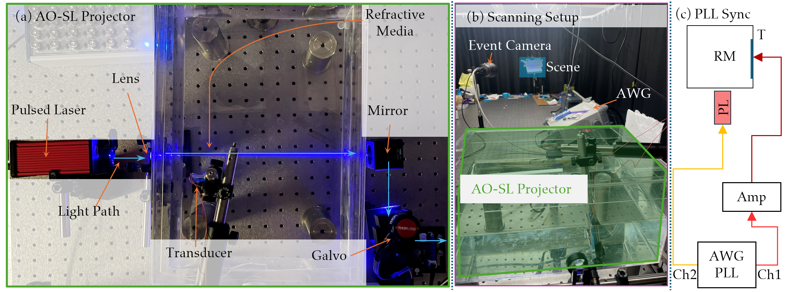
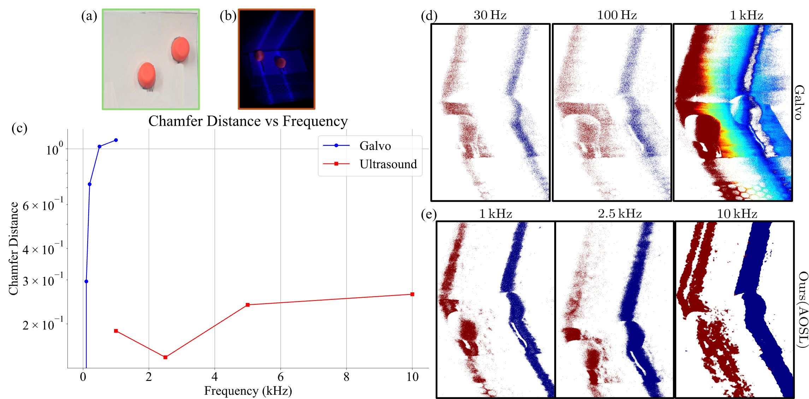
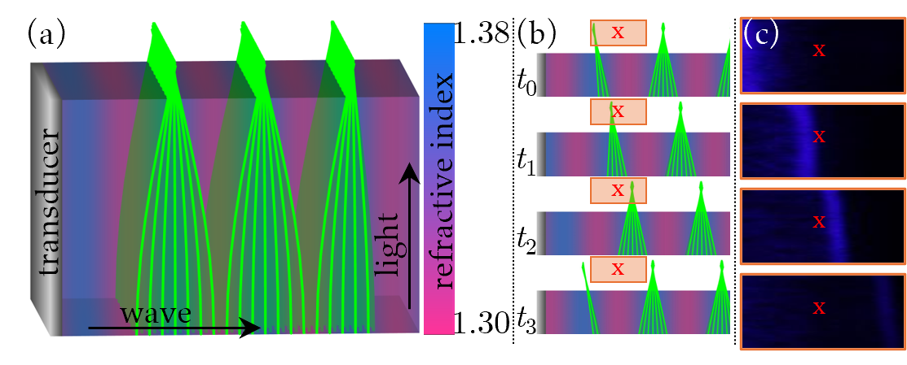
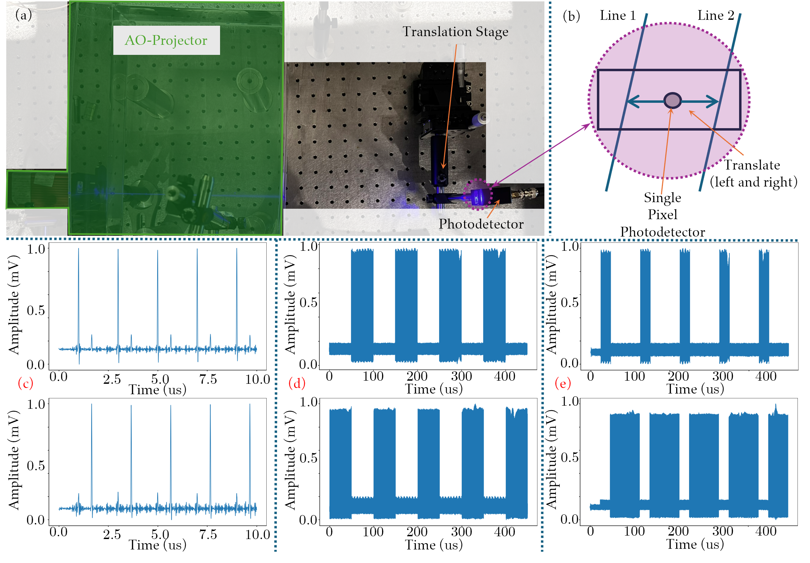
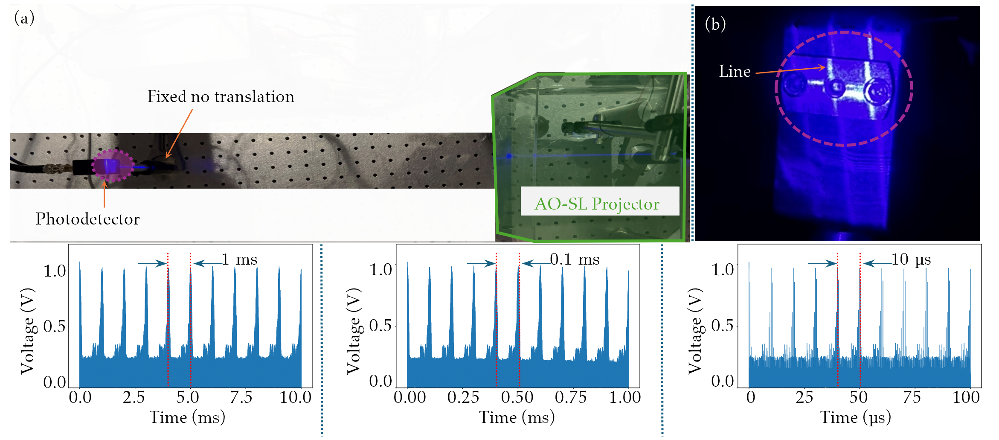
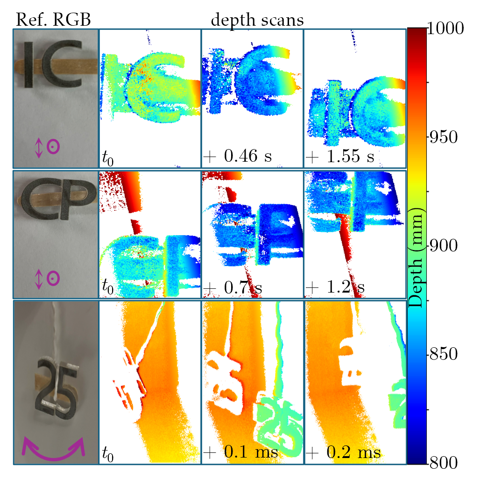

Hardware implementation of the setup shown in the schematic. (a) AO light scanning device. A pulsed laser (PL) emits a
beam that is expanded by a convex lens and directed into a refractive medium (RM). An ultrasonic transducer (T),
perpendicular to the beam, generates acoustic waves that sculpt cylindrical lenses in the medium. These lenses focus
the
light into sweeping light planes, which are then redirected by a fixed mirror onto a Galvo mirror. During
acousto-optic
scanning, the Galvo mirror remains stationary. Conversely, when using the Galvo mirror for scanning, the transducer
and
pulse frequency are constant. (b) Scanning setup. The AO device from (a) is shown in green. The scene (in cyan)
contains
orthogonal planes for calibration. The laser and ultrasound are driven by an arbitrary waveform generator (AWG). (c)
Phase-lock-loop (PLL) synchronization of the transducer with the pulsed laser, driven via Channels 1 and 2 (Ch1, Ch2)
of
the AWG. Channel 1’s output is amplified using an amplifier (Amp). This PLL synchronization ensures accurate pulse
placement with respect to the ultrasound.

Adaptive scanning of two regions of interest (orange knobs) in a scene shown in (a). We aim to illuminate and
3D scan only the knobs (b), using both the Galvo mirror and our AO device. In (c), we show the depth error measured for
these knobs when we scan with the two devices. At low scan rates, the Galvo mirror is effective at adaptively scanning
only the knobs, but its performance deteriorates as the scan rate increases: Due to the need to mechanically rotate the
beam from one location to another, the Galvo mirror must also illuminate the region between the knobs. At high scanning
speeds, the fraction of total scanning time spent illuminating this region increases, decreasing performance. By
contrast, our AO device can illuminate only the knobs, resulting in effective adaptive scanning even at
10 kfps.

(a) We show the refractive index profile created by the ultrasonic transducer and how light traveling from
bottom to top focuses onto lines. (b) As the refractive index profile evolves over time, the focal line is steered
across the medium. (c) Captured images demonstrate the temporal movement of the focused line.

Experimental validation of arbitrary line scanning. Our AO device allows us to place each of the
2-million lines it produces at any desired location. To validate this ability, we use a fast photodetector (PD) mounted
on a stage (a). We illuminate two arbitrary lines (Line 1 and Line 2) and translate the PD to their locations. We show
the output of the PD in plots (c)--(e) (top: PD is on a point on Line 1, bottom: PD is on a point on Line 2) for
various choices of illumination sequences. In (c), we alternately illuminate Line 1 and Line 2, corresponding to the
odd and even peaks in the PD output. In (d), we illuminate Line 1 for 100 laser pulses and Line 2 for 100 laser
pulses, corresponding to a PD output that is a square waveform of frequency 10 kHz. In (e), we illuminate
Line 1 for 50 laser pulses and Line 2 for 150 laser pulses, corresponding to a PD output that has a duty cycle of
25% when it is on Line 1 and 75% when it is on Line 2.

Experimental validation of high-speed line scanning.
(a) Experimental setup showing a fast photodetector placed in front of our AO scanning system. The detector output increases when the scanned line crosses it.
(b) Visualization of the projected scanning line illuminating the photodetector. Bottom: Oscilloscope traces read out from the photodetector. The traces show periodic intensity peaks corresponding to scanning frequencies of 1 kfps, 10 kfps, and 100 kfps (left to right). The temporal spacing between adjacent peaks confirms successful line scanning at these frequencies.

Non-periodic dynamic scenes: Depth scans of characters "IC", "CP", and "25", covered with retroreflecting tape. In the top and middle rows, the characters are mounted on a stick and moved rapidly in a top-to-bottom (↕) sweeping motion, with some additional forward-backward translation (⊙). In the bottom row, the characters are swung by hand using a string. For each row, the RGB image to the left shows the scene and visualizes the approximate motion trajectory. The images to the right show the depth frames at different points of the trajectory, captured at 180 fps (top and middle row) or 200 fps (bottom row). The supplement includes a video of continuous depth scanning as the targets move.